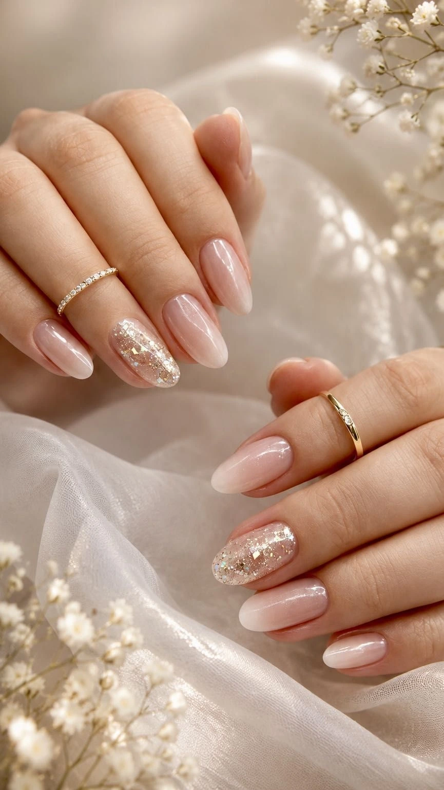
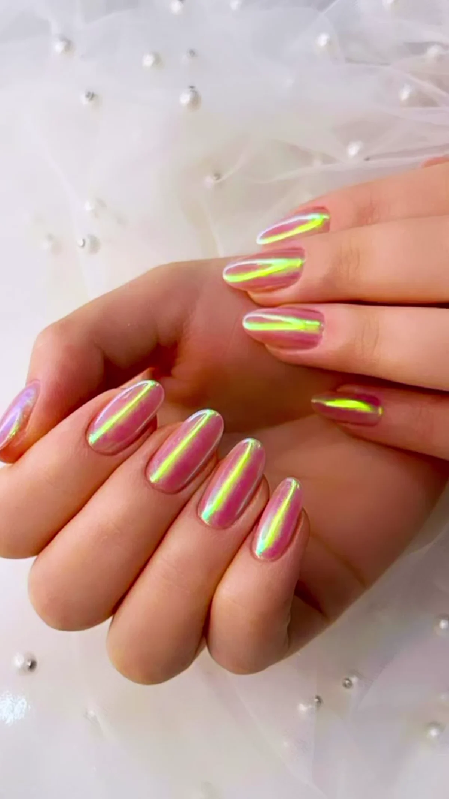
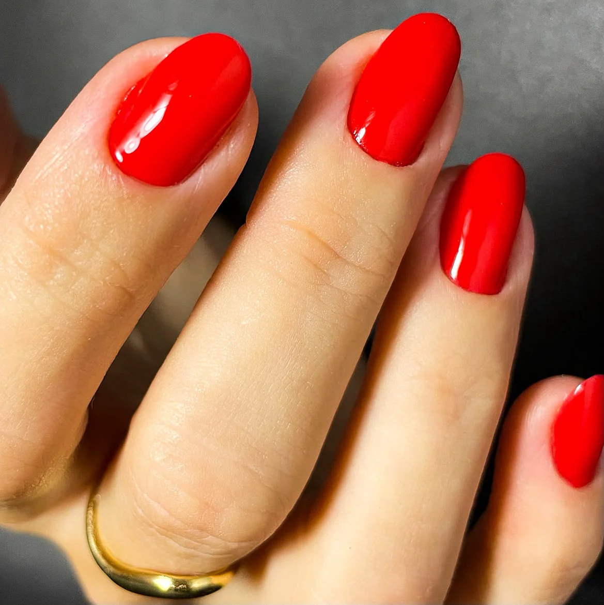
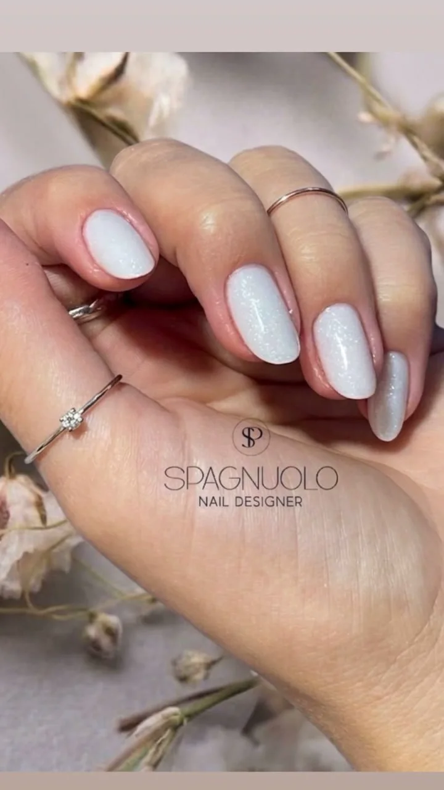
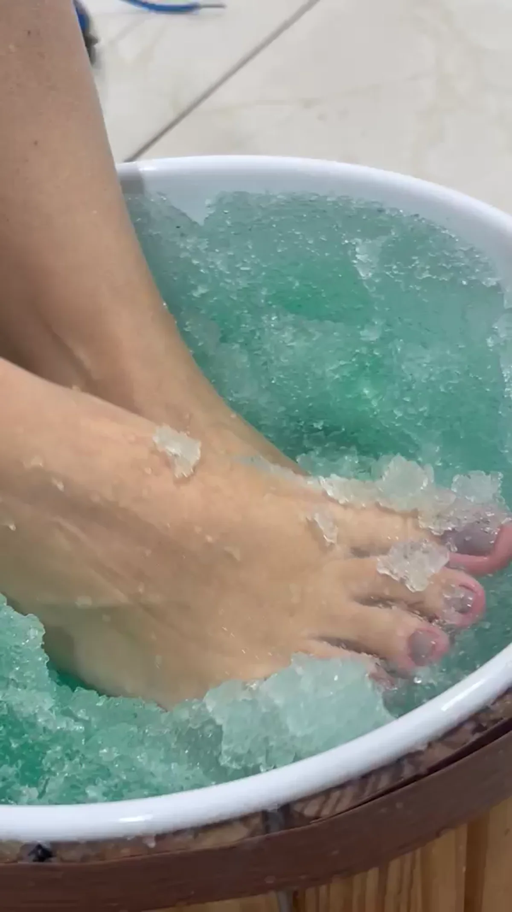
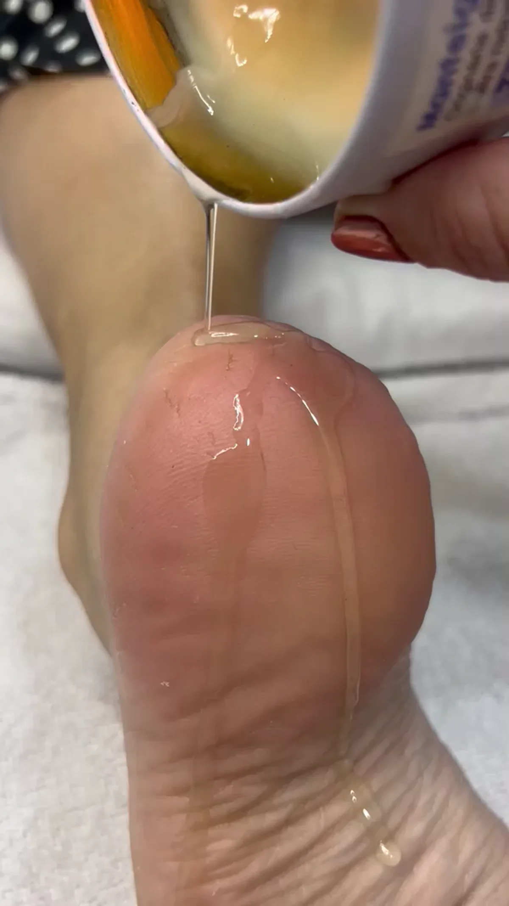
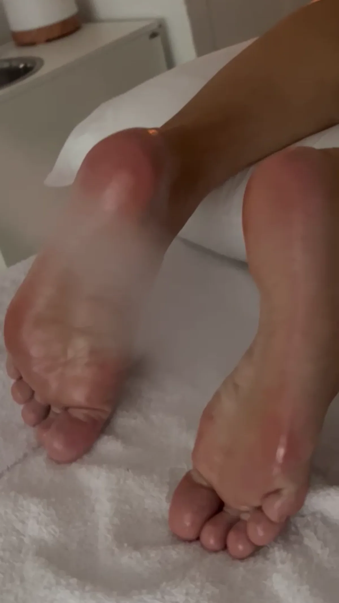
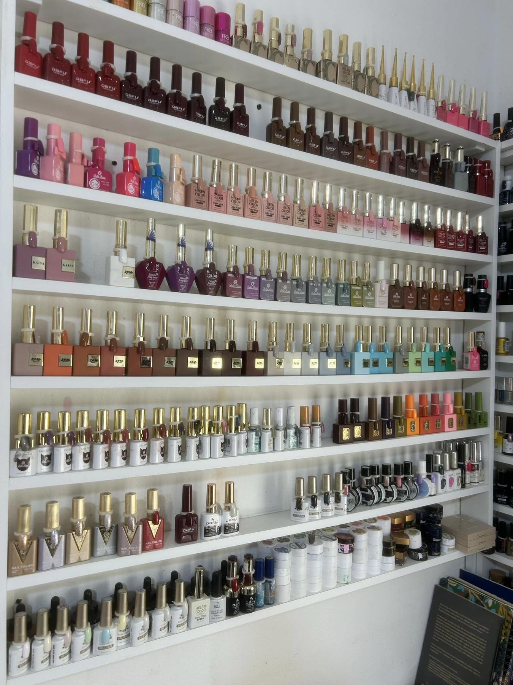

Mais procurado
Alongamento & manutenção
Construção delicada para um resultado elegante e natural. A manutenção de trabalhos realizados por outras profissionais também pode ser avaliada.
Ver horáriosNail care em Blumenau
Técnica, saúde das unhas e atendimento individual em um momento pensado para você.



A promessa Spagnuolo
Antes da estética, vem a escuta. Cada atendimento começa entendendo o que suas unhas precisam: naturalidade, fortalecimento, reconstrução ou manutenção.
“Saúde, beleza e elegância através do cuidado.”
Serviços
Escolha sua experiência e consulte horários, duração e valores atualizados diretamente no Booksy.
Mais procurado
Construção delicada para um resultado elegante e natural. A manutenção de trabalhos realizados por outras profissionais também pode ser avaliada.
Ver horáriosCuidado dos pés
Cuidado para ressecamento e rachaduras, com foco em conforto, bem-estar e saúde dos pés.
Ver horários
Naturalidade
Mais de 1.000 opções de esmaltes, além de diferentes técnicas e efeitos.
Proteção, estrutura e durabilidade para as unhas naturais.
Atendimento em maca, massagem, spa e cuidados podais.
Uma experiência para desacelerar
Mais do que um procedimento, um momento de pausa. Os cuidados são realizados com você confortavelmente deitada, recebendo atenção individual em cada etapa.
Enquanto os pés recebem o cuidado, você pode relaxar e aproveitar a experiência na maca.

O ritual começa com uma experiência sensorial preparada para desacelerar.

Texturas, hidratação e massagem transformam o procedimento em um momento de atenção.

Uma sensação de leveza que continua depois do atendimento.
“Era meu sonho fazer o pé deitada.”
Comentário relatado por clientes novas. O atendimento estético não substitui avaliação médica.Por que Spagnuolo
Um estúdio pensado para respeitar suas unhas, seu ritmo e a forma como você quer viver esse momento.
O cuidado começa pela necessidade real, não por uma solução padrão.
Proporções, acabamento e estrutura que valorizam suas mãos.
Técnica e escolhas orientadas à integridade das unhas.
Converse, use o celular ou descanse. O momento é seu.

A experiência
Sem a movimentação de um salão cheio. O atendimento individual cria um espaço de acolhimento, privacidade e atenção aos detalhes.
Portfólio
Toque em um trabalho para explorar a galeria completa
Experiências reais
Relatos publicados por clientes e um registro real da experiência no estúdio.
Registro real enviado à Spagnuolo Designer. O vídeo não inicia automaticamente e pode ser pausado a qualquer momento.
“Simplesmente impecável, excelente trabalho!”
“Lugar maravilhoso.”
“Arrasou como sempre.”
Sobre Alessandra
A experiência de Alessandra Spagnuolo se traduz em cuidado técnico, agilidade e um atendimento que considera cada pessoa de forma única.
Mais do que escolher uma cor, a cliente encontra orientação e um trabalho construído para unir beleza, naturalidade e saúde.
“O resultado bonito começa pelo cuidado certo.”
Antes de agendar
Informações para que seu atendimento comece com tranquilidade.
Sim. A agenda é organizada para garantir atendimento individual e pode ser consultada com até seis meses de antecedência.
A solicitação deve ser feita com antecedência mínima de 2 horas.
Sim. Para a primeira reserva, é solicitado um sinal de 30%.
Sim. O trabalho é avaliado individualmente, sem exigir remoção automática.
Sim. Pacotes podem ser personalizados conforme a frequência e os serviços desejados. Vale-presente também está disponível. Consulte as condições atuais diretamente pelo atendimento.
Localização
Atendimento somente com hora marcada.